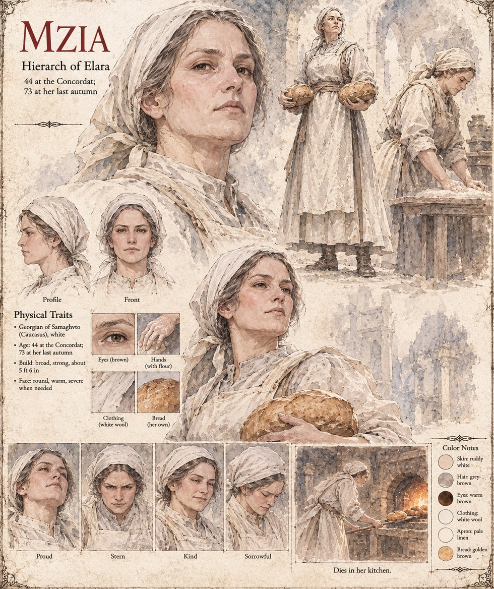

Mzia
Hierarch of Elara, the Mother’s Hierarch at Samaghvto · baker of the feast bread · 44 at the Concordat, 73 in the autumn of the dry Vintage
Forty-four and broad when the Concordat of the Quiver is drawn, Hierarch of Elara at the Triple Synod, who baked her own bread for the feast days, a thing no Hierarch before her had done and no priest after her would dare to stop, and who ruled her college with the warm, unanswerable severity of a woman who has raised a great many children and expects every one of them to come home. She is one of the three who receive the Warden of Ormeli and the bow on the black basalt of Samaghvto. She has a child, Nestan, draw the arrows from the clay jar, because she thinks it will be pretty, and the Elara college embroiders a mantle with rain for the girl to wear on a white mule in the Vintage procession. Four of the twelve living arrows go to the Mother’s valleys (Tskhavar, Nakuri, Mesvana and Bakviri), and in the Concordat’s first twenty-eight years the Mother’s one Portion is the Long Gentle Rain of the sixth year, loosed by her priests with an arrow of Tskhavar’s.
In the fourteenth year she hears Ketevan’s Memorandum on Proportion read in the Hall, says that the Mother is not a pot to be rationed, goes home and does not sleep, and spends fifteen years not thinking about it with the strenuous discipline of a woman who bakes. In the twenty-ninth year the Mother’s own college votes almost to a man against the Mercy rain, the rain falls on the plain by the Mother’s own arrow, and the Mother’s four valleys go dry the same season, so that there is no first wine for the first time in the Temple of Elara’s history. At seventy-three she preaches on the steps of her temple in the second week of Iverin that the Mother lends and does not take, and that when a thing goes missing in the very hour another is given there is a word for what has been done, and it is not mercy. It is theft. The manuscript notes that this is the Warden’s Memorandum set the other way up and that nobody notices, because one had been filed and the other was being shouted.
That evening she receives Ketevan in the temple kitchen, with flour to her elbows and a loaf in each hand, and hears the argument again, that nobody is a thief and everybody is a borrower and the lender is nowhere in the Synod’s records. She asks the one question that is not about the lender, whether Ketevan cast the voice knowing what it would take from her vintners; Ketevan says Yes. I believe you, Warden, says the Hierarch of Elara. It makes no difference. On the twenty-fifth of Iverin the Elara host, seven thousand men of Bakviri, Mesvana, Tskhavar and Nakuri, marches down the Wine Road with a priest of the Mother carrying the empty cup beside the dry pennant. The manuscript gives her one more line: she dies, the autumn after the Hail, in her own kitchen with flour on her hands. At the Rite of the Fourth Crown her chair is empty and a loaf is set on the seat.
The manuscript gives her ages, her broad build, her bread and her severity. The sheet’s height of about 5 ft 6 in, round, warm face (severe when needed), brown eyes, grey-brown hair under a white headcloth, white-wool dress with a pale linen apron, flour on the hands and loaf of her own bread are its own, as are its panels Proud, Stern, Kind and Sorrowful and its scene Dies in her kitchen, which draws her at the oven. Its age line, 44 at the Concordat; 73 at her last autumn, folds into one autumn what the manuscript spreads over two: seventy-three in the Iverin of the failed vintage, and death the autumn after the Hail. Her fellow Hierarchs on the Synod are Gurgen of Auron and Otar of Solan.
“the warm, unanswerable severity of a woman who has raised a great many children”